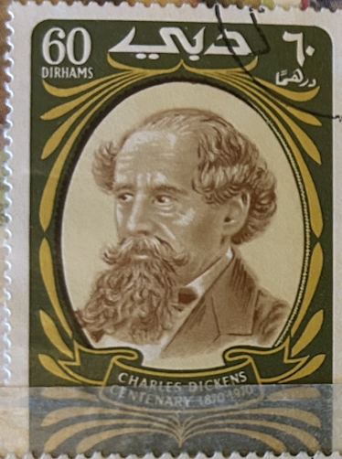
| SOURCE | TITLE| IMAGE MATCH | click to source page |
| eBay | Dubai Famous British Writer Dickens stamp 1970 | eBay | 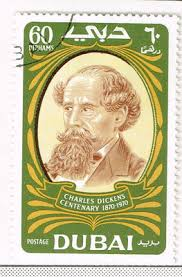 |
| Colnect | Dubai : Stamps [Series: 100th death of Charles Dickens] : Colnect 📮 | 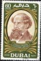 |
| Aukro | Ze známek kolonií a exotiky od koruny - strana 1 | Aukro | 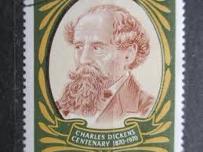 |
| Commemorative Coin Covers | 2012 Charles Dickens Birth Bicentenary Silver Proof 2 Pounds Coin Cover - UK PNC First Day Cover | 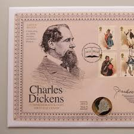 |
| eBay | Kamerun - Charles Dickens Dreierstreifen postfrisch 1970 Mi. 634-636 | eBay | 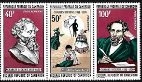 |
| Colnect | Stamp: Charles Dickens and Dingley Dell cricket match (Saint Helena(Exploration and Innovation Anniversaries) Mi:SH 999,Sn:SH 913a,Yt:SH 941,Sg:SH 1017,WAD:SH043.2006 📮 | 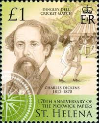 |
| eBay | Russia Famous Victorian Writer English Novelist Charles Dickens stamp 1962 A-11 | eBay | 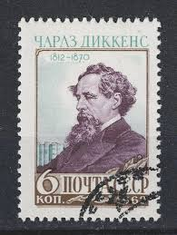 |
| Dreamstime.com | 159 Great Dickens Stock Photos - Free & Royalty-Free Stock Photos from Dreamstime | 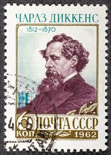 |
| Shutterstock | 2+ Thousand Famous English Writers Royalty-Free Images, Stock Photos & Pictures | Shutterstock | 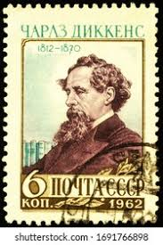 |
| Guernsey Stamps | First Day Cover | 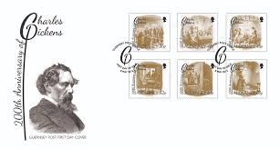 |
| 123RF | Dostoevskij Stock Photos and Images - 123RF | 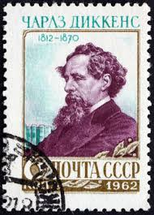 |
| Shutterstock | 81 Charles Dickens Stamp Royalty-Free Images, Stock Photos & Pictures | Shutterstock | 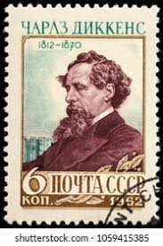 |
| eBay | Charles Dickens Stamps | eBay | 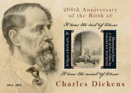 |
| Find Your Stamps Value | Value of charles dickens 1812/1870 1812 1870 stamps | 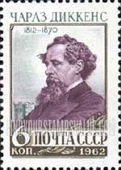 |
| postbeeld.com | Stamp 1970, Cameroon Charles Dickens 3v [::], 1970 - Collecting Stamps - PostBeeld - Online Stamp Shop - Collecting | 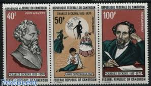 |
| Russian Philately | 1962 Sc 2593. Figures of world culture. Scott 2588 for sale at Russian Philately | 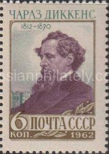 |
| GetArchive | RUSMARKA-1735 - postal stamp - public domain postal stamp scan - PICRYL - Public Domain Media Search Engine Public Domain Image | 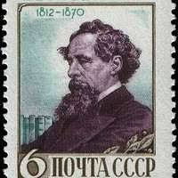 |
| Colnect | Stamp: Pyotr Ilyich Tchaikovsky (1840-1893), Russian composer (Albania(Composers) Mi:AL 2550,Sn:AL 2463d,Yt:AL 2321,Sg:AL 2583,AFA:AL 2589 📮 | 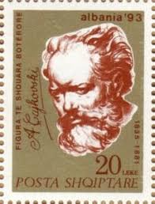 |
| Dreamstime.com | John Dickens Stock Photos - Free & Royalty-Free Stock Photos from Dreamstime | 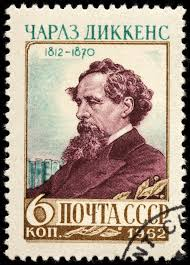 |
| iStock | Postage Stamp Ussr 1956 Shows Nikolai Ivanovich Lobachevsky 17921856 Stock Photo - Download Image Now - iStock | 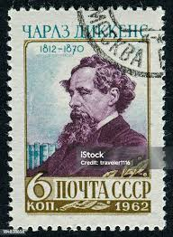 |
| Dreamstime.com | Charles IV editorial image. Image of face, crown, historic - 179608470 | 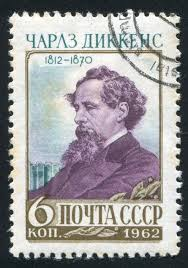 |
| Alamy | 1970 music hi-res stock photography and images - Alamy | 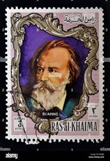 |
| Postcards from Slough | Charles Dickens - Postcards from Slough | 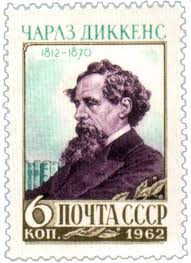 |
| World History Edu | Charles Dickens - World History Edu | 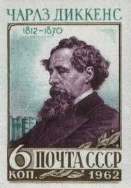 |
| eBay | Ukraine 2019, Great Mathematics, Physics, James Clerk Maxwell, sheet 6v | eBay | 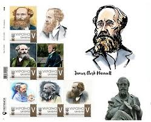 |
| Behance | A Christmas Carol, illustrated by Mark Summers :: Behance | 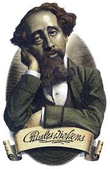 |
| Peter Berthoud | Dickens Snap - A Victorian Card Game | 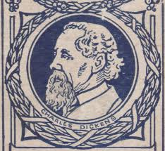 |
| Redbubble | " James Clerk Maxwell" Sticker for Sale by ComicsFactory | Redbubble | 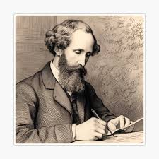 |
| Amazon.com | The Collected Complete Works of Charles Dickens (Huge Collection Including A Christmas Carol, Great Expectations, Oliver Twist, Bleak House, David Copperfield, A Tale of Two Cities, And More) - Kindle edition by | 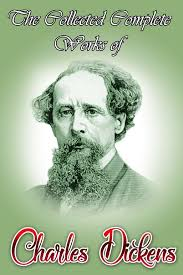 |
| allnumis.com | 6 Cents 1970 - E. J. Eyre, Explorer - I(L), 1970 - Australia - Stamp - 52380 | 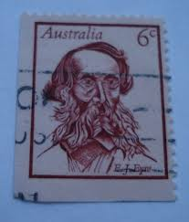 |
| eBay | Mint Never Hinged/MNH Australian Stamps for sale | eBay | 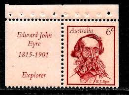 |
| eBay | RAH AL KHAIMA MICHEL# 590 (vv) MNH IMPERFORATE MINI-SHEET MUSIC TOPICAL | eBay | 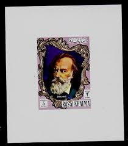 |
| Freestampcatalogue.com | Stamps from China People's Republic - Freestampcatalogue.com - The free online stampcatalogue with over 500.000 stamps listed. | 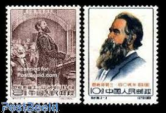 |
| Free stamp catalogue | Stamps from Russia, Soviet Union - Freestampcatalogue.com - The free online stampcatalogue with over 500.000 stamps listed. | 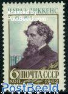 |
| lastdodo.com | John Brahms [1833-1897] Stamp catalogue - LastDodo | 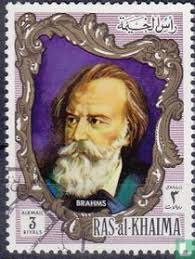 |
| Second Hand Books India | Second Hand Books India | 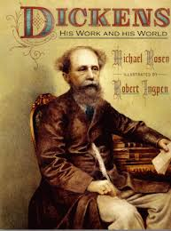 |
| Alamy | CHARLES DICKENS (1812-1870) English author in a painting by Robert Buss entitled Dickens' Dream fro 1875 Stock Photo - Alamy | 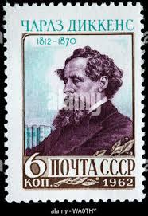 |
| Shutterstock | Gibraltar Circa 2005 Stamp Printed Gibraltar Stock Photo 147639389 | Shutterstock | 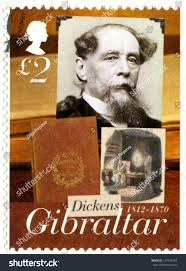 |
| lastdodo.com | Stamps from Barbuda Stamp catalogue - LastDodo | 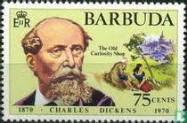 |
| Alamy | Charles dickens english writer hi-res stock photography and images - Alamy | 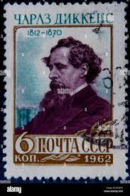 |
| Science Source | James Clerk Maxwell, Scottish Physicist #4 Tapestry by Science Source - Science Source Prints | 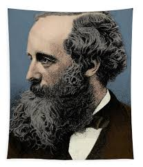 |
| On this day … 4 February 1854 # 'It is a nasty place' – Charles Dickens' verdict following a visit to Preston The Preston Guardian reported a visit by Charles Dickens | 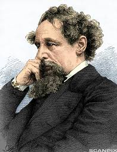 | |
| eBay | NEW CALEDONIA NEUKALEDONIEN 1978 614 100 Geb. Maurice Leenhardt Messionar MNH | eBay | 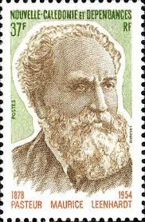 |
| Alamy | Charles Dickens 1812-1870 English Novelist Stock Photo - Alamy | 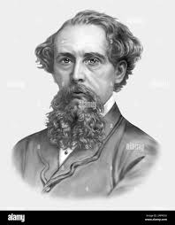 |
| Posterazzi | James Clerk Maxwell, Scottish Physicist Poster Print by Science Source - Item # VARSCIBR9267 - Posterazzi | 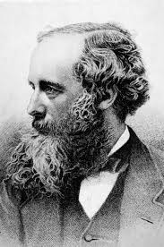 |
| eBay | 1952 Topps Look 'n See - #125 "Charles Dickens" - VG/Ex Condition | eBay | 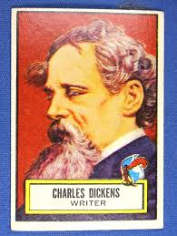 |
| eBay | FDC 1968 - Pierre LAROUSSE - 1817-1875 (3787) | eBay | 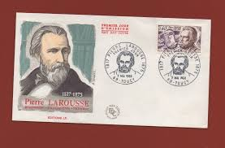 |
| Horizon Books | Results for "Ingpen, Robert" | Horizon Books | 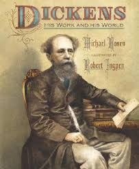 |
| HipStamp | Australia 1970 Sc#457, SG#482 6 cents Explorer EJ Eyre USED-VF-H. | Australia & Oceania - Australia, General Issue Stamp / HipStamp | 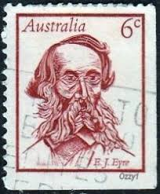 |
| Zazzle | Bill Sikes by Kyd, Charles Dickens Oliver Twist Postcard | Zazzle | |
| Shutterstock | 6+ Thousand Australian Postage Stamp Royalty-Free Images, Stock Photos & Pictures | Shutterstock | |
| vocal.media | 5 Horrifying Moments in Charles Dickens' Novels | Geeks | |
| tartx | tartx: featuring the art of Tiffini Elektra X - Charles Dickens Men's or Unisex T-shirt | |
| The Wall Street Journal | Book Review: Great Expectations | The Great Charles Dickens Scandal | Charles Dickens in Love - WSJ | |
| VoiceMap | Charles Dickens' Washington DC: from Decatur House to Freedom Plaza | Washington, D.C. self-guided audio tour | VoiceMap | |
| Princeton University | Happy Birthday Dickens February 1812 - Graphic Arts | |
| Adobe | Charles Dickens Images – Browse 2,928 Stock Photos, Vectors, and Video | Adobe Stock | |
| Science Photo Library | theoretical physicist - Keyword Search - Science Photo Library | |
| Alamy | Charles Dickens (1812-1870) portrait photograph, circa 1860-1869 Stock Photo - Alamy |